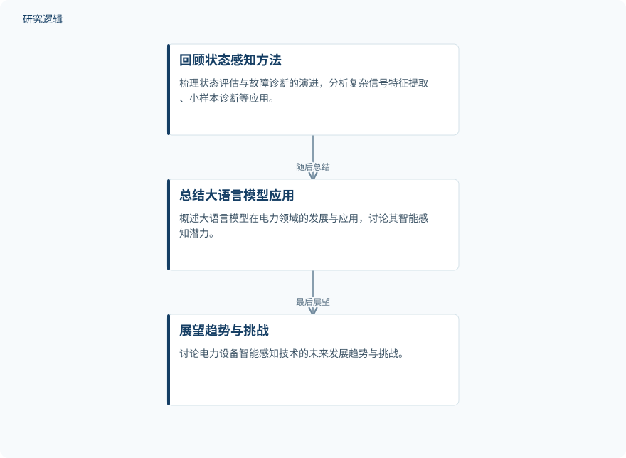

摘要解读
面向电力设备状态感知的前沿人工智能：应用与趋势
State‐of‐the‐Art Artificial Intelligence for Condition Perception of Power Equipment: Applications and Trends
解读更新 2026-11-10 11:59 · 依据公开摘要整理，未核验全文细节
电力设备运行环境日益复杂，传统运维策略如何适应电网安全稳定运行的要求？这篇综述围绕状态评估、故障诊断与大语言模型，梳理人工智能用于设备状态感知的进展，为理解智能运维的技术脉络提供参考。
文章目录
运行环境变化，推动状态感知走向智能化
摘要将研究背景放在“双碳”目标推进与新型电力系统建设之下：电力设备的运行环境越来越复杂，传统运行维护策略难以充分满足电网安全稳定运行的需求。文章关注的是人工智能如何服务于设备状态感知，而非单一算法的性能展示。
综述以状态评估和故障诊断为核心维度。这一组织方式提示读者，阅读时应分别关注设备状态如何被评估、故障如何被识别，而不宜把不同任务中的算法表现直接混为一谈。
从方法演进梳理到大语言模型应用
依据摘要，文章首先回顾电力设备状态评估与故障诊断方法的演进，并分析各类智能算法在工程应用中的效能，明确提到的场景包括复杂信号特征提取和小样本诊断。随后，文章总结大语言模型在电力领域的发展与应用，最后讨论智能感知技术的未来趋势和挑战。
这些内容构成综述的组织框架，而不是一套已经实施并验证的诊断流程。摘要没有交代文献检索策略、纳入标准或证据汇总方式，因此不能据此判断其综述覆盖的完整程度。
依据摘要整理的综述展开顺序


仅概括摘要明确陈述的综述环节及顺序，不代表论文原图，也不表示经过验证的算法流程。
下载 SVG图示关系说明
实线表示相邻阶段的信息流，虚线表示跨阶段联系或反馈。
回顾状态感知方法 → 总结大语言模型应用：随后总结；总结大语言模型应用 → 展望趋势与挑战：最后展望
强调大语言模型潜力，未给出量化性能结论
摘要明确强调了大语言模型用于电力设备智能感知的优势与潜力，并将其作为独立议题展开总结。不过，摘要没有列出具体优势对应的任务、比较对象或性能指标，因此不能将这一概括解读为大语言模型已在设备诊断中全面优于其他方法。
就当前资料而言，可确认的是文章梳理了智能算法的应用进展，并讨论复杂信号与小样本场景；不能提炼出某种算法提升了多少准确率、降低了多少运维成本等定量发现。文章提出的学术与工程参考价值，也是其目标，而非摘要已经验证的应用效果。
样本、比较与工程验证仍需查阅正文
仅凭摘要，无法判断所综述研究涉及哪些设备类型、样本规模与数据来源，也无法核对算法比较是否使用一致条件。对于小样本诊断和大语言模型应用，摘要同样没有提供验证范围、跨场景表现或工程部署细节；这些属于当前资料无法判断的信息，不代表论文没有讨论。
阅读启发：沿任务与证据理解智能运维
阅读启发：进一步阅读时，可沿“状态评估—故障诊断”的任务划分，关注复杂信号特征提取与小样本诊断分别依赖什么证据。对于大语言模型，值得追问其具体承担什么任务、所谓优势来自哪些比较，以及哪些内容仍属于潜力展望。这样更有助于区分技术愿景与已经获得支持的工程能力。
以上为本站阅读启发与建议，不是论文已验证的结论。